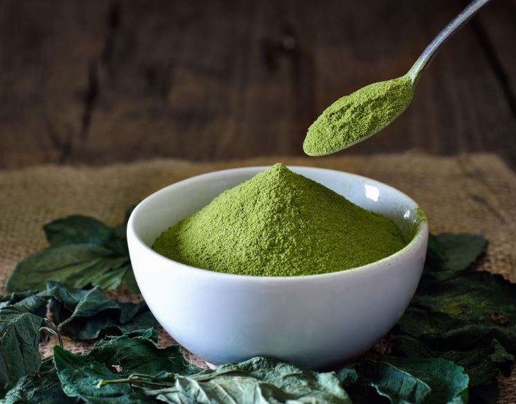
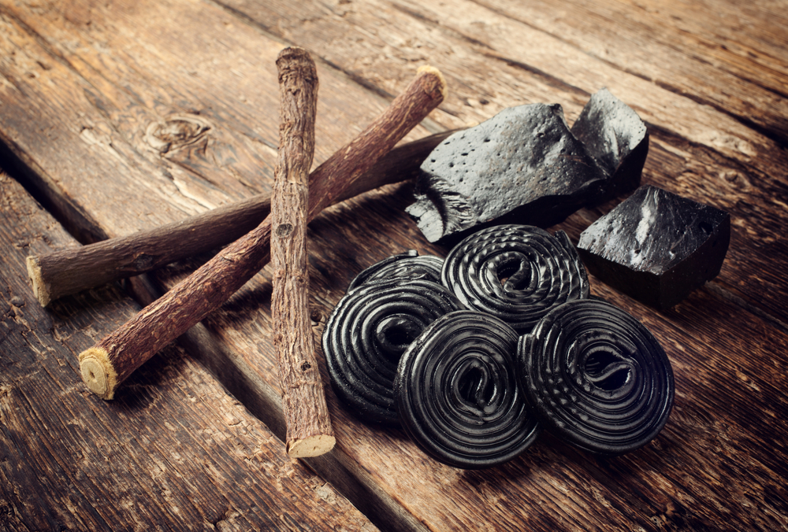
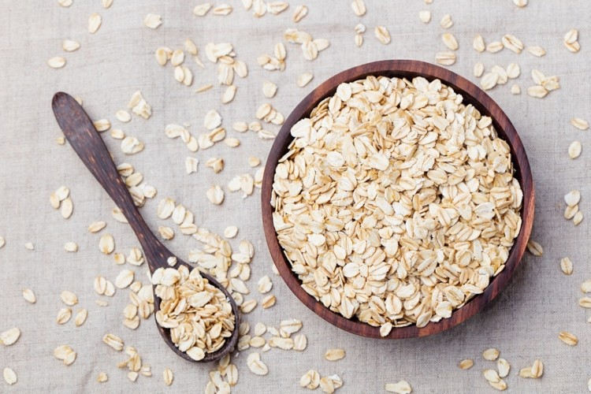
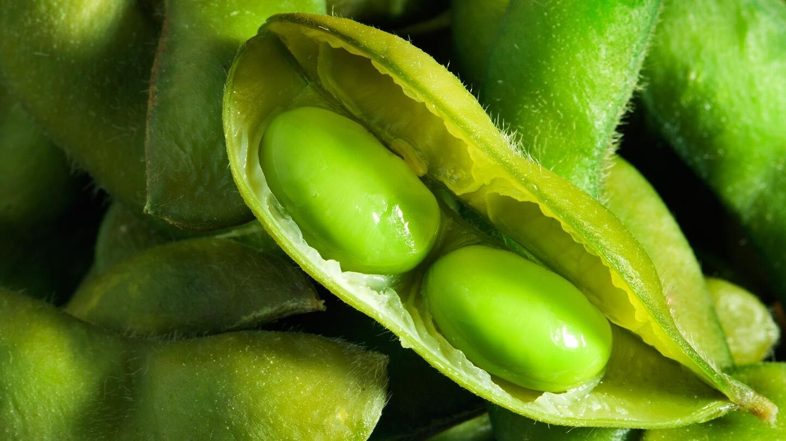
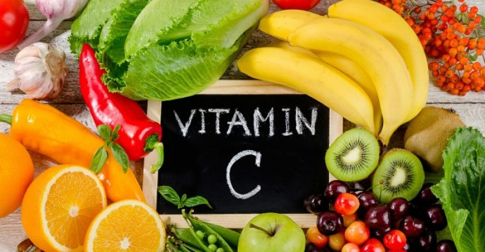
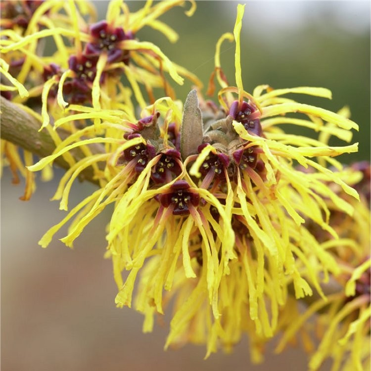

Beta Carotene Helps Protects Against Sun Damage
Red, orange, and yellow fruits and veggies, like carrots, sweet potatoes, and pumpkins, are packed with beta carotene, a nutrient with many benefits for your skin, says Ido Leffler,cofounder of the Yes To skin-care line. Your body converts beta carotene into vitamin A, an essential nutrient for healing wounds, protecting against sun damage, and encouraging cell turnover.
"Topical beta carotene has antioxidant benefits on the skin, and research has reported that it improves discoloration due to melasma," says Jessica Wu, MD, assistant clinical professor of dermatology at University of Southern California in Los Angeles and author of Feed Your Face: Younger, Smoother Skin and a Beautiful Body in 28 Delicious Days. You can find it in Burt's Bees Complete Nourishment Facial Oil ($15.19) and Yes to Carrots Daily Facial Moisture with SPF 15 ($8). Just so you know, Everyday Health may earn commissions from the shopping links included in this article.
Green Tea Extract Is an Excellent AntiInflammatory for Skin
This healthy drink contains high levels of antioxidant chemicals — including catechins, such as epigallocatechin gallate, and flavonoids, such as kaempferol and theaflavin — to help prevent and reverse UV damage to the skin, explains Neal Schultz, MD, a dermatologist in New York City and creator of BeautyRx Skincare. These same chemicals make green tea an excellent natural anti-inflammatory and skin soothing ingredient in skin care.
Licorice Extract Helps Treat Redness and Rosacea
The anti-inflammatory properties of licorice extract make this one of the best natural ingredients to treat redness and rosacea. And the plant has also been shown to reduce uneven pigmentation by blocking the production of melanin. Dr. Wu suggests looking for licorice extract in eye treatments because one study found that a cream containing the ingredient helped lighten dark under eye circles.
Oats Soothe Eczema and Other Skin Irritation
Colloidal oatmeal is one of the few natural ingredients that the Food and Drug Administration (FDA) has approved to treat skin irritations, such as eczema, dry skin, poison ivy, poison oak, and insect bites, says Wu. "Oat lipids and proteins help replenish and maintain the skin barrier," she explains, "and oats contain anti-inflammatory and antioxidant chemicals."
Soy Helps Brighten Dull Skin and Is a GoodAlternative to Stronger Prescription Products
"Look for this ingredient if you'd like your skin to look brighter and more even-toned," Wu says. "Topical soy has been shown to lighten discoloration due to melasma and sun damage by inhibiting skin's overproduction of melanin skin pigment." Soy-based products are a particularly good option for those looking for an alternative to prescription-strength ingredients, like retinoids and hydroquinone
Vitamin C Helps Battle Aging and Sagging Skin
You may think of vitamin C as an essential defense against the common cold, but the nutrient also battles the common signs of aging skin: sagging and dullness. Vitamin C aids in collagen synthesis, which is essential for firmness and smoothness, Wu explains. Plus, it has antioxidant benefits to help fight free-radical damage, and lightens dark spots. As if this little vitamin didn't already work hard enough, C can also regulate sebum production to prevent acne and decrease inflammation.
Willow Herb Has Anti-Microbial and Antiseptic Properties
Willow herb, a wildflower, is a unique anti-microbial, anti-irritant, and natural antiseptic that has long been used to sooth common skin irritations, including rosacea and eczema. One of the little flower's benefits includes the ability to kill Propionibacterium acnes bacteria, the nasty microbes that cause acne, which makes the natural ingredient a great option for treating breakouts, says Paula Begoun, founder of the skin care and cosmetics brand Paula’s Choice
Witch Hazel Helps Control Oil, but Hydrates, Too
Witch hazel has been a staple home remedy for centuries, says Renée Rouleau, a celebrity esthetician. She explains that witch hazel is an excellent ingredient in toners and moisturizers to control oil while also offering hydration and reducing redness. "Witch hazel can be used on sores, bruises, and swelling," says Dr. Schultz. That's why you'll often see the ingredient in aftershaves, he says. Rouleau offers this note of caution: "The witch hazel astringent found in drugstores usually contains alcohol and is not recommended as it will strip your skin of moisture."